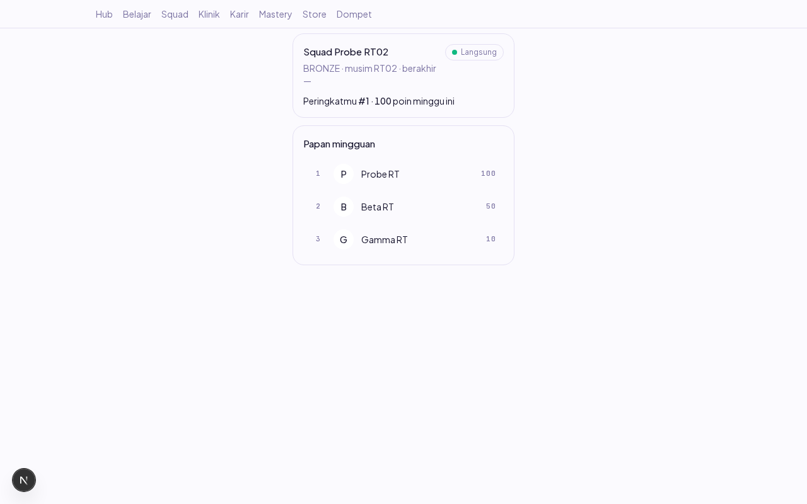
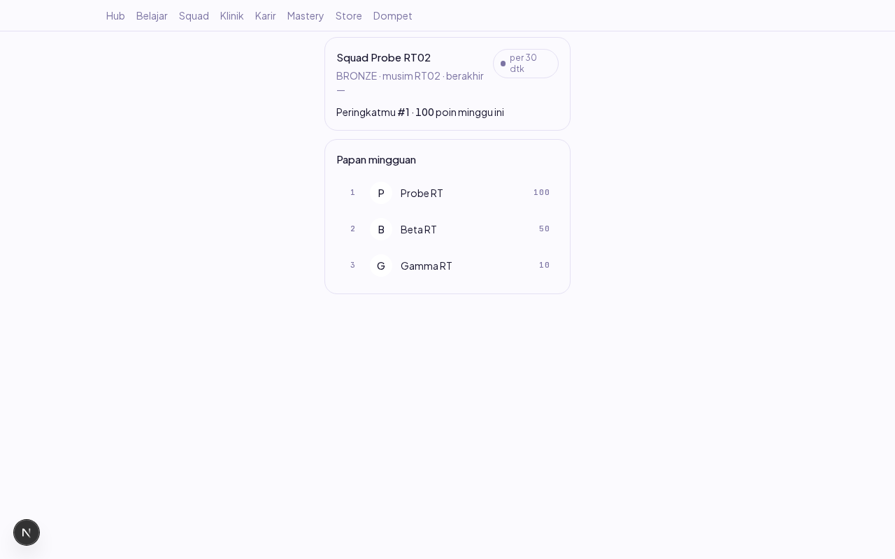
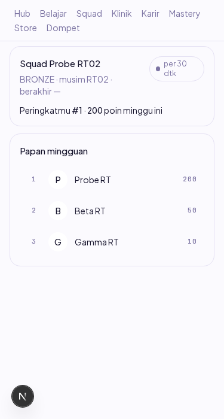

Laporan verifikasi end-to-end item RT-02 (Dev B). Dikerjakan 18 Okt 2026 (sesi susulan minggu 12–16 Okt).
Layar squad kini memakai hook useRealtime: mesin transport Q-05 (WS + polling 30 dtk) teruji di lib/leaderboard-live dipasang lewat hook yang bisa dipakai layar mana pun — squadId terisi berarti kanal WS squad, null berarti polling-murni (kanal user:/league: memang polling di v0.1, PRD E15). Penjaga refetch in-flight + satu trailing run yang tadinya closure privat squad-screen diangkat menjadi fungsi murni teruji lib/refetch-guard.
| # | Skenario | Harapan | Hasil | Cara verifikasi |
|---|---|---|---|---|
| 1 | Registrasi + semai squad (musim aktif, 3 anggota berpoin 100/50/10) | — | TERSEMAI | psql dev lokal |
| 2 | Buka /squad dengan WS HIDUP | Papan 3 baris terisi, chip transport "Langsung" | LULUS | Screenshot 01 + assert chip |
| 3 | AC: WS "dimatikan seluruhnya" (rute /api/v1/ws* di-abort di level browser; REST tetap hidup) | Papan TETAP 3 baris via polling, chip jujur "per 30 dtk", TIDAK ada layar kosong/galat | LULUS | Screenshot 02 + context.route abort |
| 4 | Data berubah saat WS mati: poin → 200 di Postgres + kunci ZSET dibuang | Dalam ≤1 tick polling papan menampilkan 200 TANPA reload (lewat rebuildSquad milik aplikasi, aturan keras 7) | LULUS | waitForFunction teks "200" |
| 5 | Viewport 375px | Tanpa scroll horizontal | LULUS | Screenshot 03 + scrollWidth |
| 6 | Console | Bersih (di luar kegagalan WS yang sengaja diblokir) | LULUS | Listener console error |
| 7 | Penjaga refetch (unit) | In-flight ditahan, SATU trailing run, pulih dari lemparan | LULUS | refetch-guard.spec.ts 4 test |

01 — WS hidup: papan terisi, chip "Langsung".

02 — WS dimatikan: papan TETAP terisi via polling 30 dtk, chip jujur "per 30 dtk", tanpa layar galat (AC RT-02).

03 — 375px tanpa scroll horizontal.
| Pemicu | Gejala | Root cause | Expected setelah perbaikan | Reproduce |
|---|---|---|---|---|
| Menjalankan verifikasi browser yang menyemai data ke DB dev BERSAMAAN dengan suite integrasi | Data semaian hilang diam-diam (users TRUNCATE CASCADE oleh suite), papan/squad kosong tak terduga | Ini jebakan yang sudah tercatat di CLAUDE.md ("satu suite penyentuh DB pada satu waktu") — terjadi LAGI di sesi ini | Satu penyentuh DB pada satu waktu: verifikasi browser menunggu suite integrasi selesai | Seed baris users sambil integrasi berjalan → baris hilang |
FEATURE_WS_ENABLED hanya komentar di fitur.ts — kill switch yang benar-benar dibangun hanya FEATURE_TOPUP_ENABLED (P-02), jadi tidak ada cara lain mematikan WS tanpa mematikan REST yang seproses.rebuildSquad (bukan menulis Redis manual).squadId null: panggilan ambil saat null no-op terjaga; transisi null → id tidak memasang ulang mesin.| Perintah | Hasil |
|---|---|
pnpm --filter @strive/web test | 82/82 hijau (4 baru: refetch-guard) |
pnpm lint && pnpm typecheck && pnpm build | hijau |
pnpm --filter @strive/api test:integration (bersih, tanpa pesaing DB) | hijau penuh |
| Audit keamanan (agent-security) | terlampir di PR |